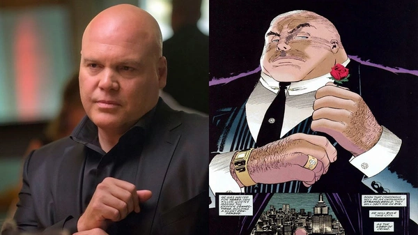
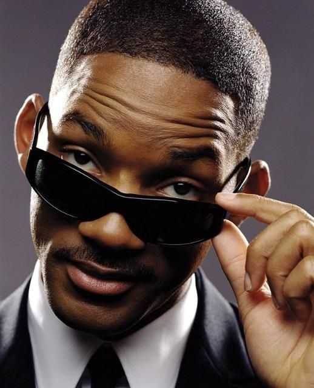
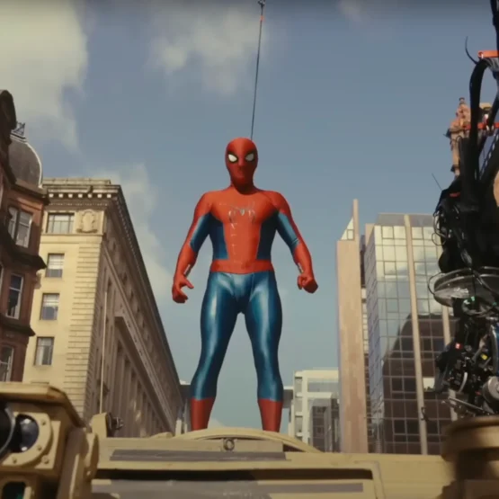

O painel da Disney+ na CCXP 2025 revelou algumas cenas inéditas e empolgantes da segunda temporada de "Demolidor: Renascido"
07/12/2025
Aqui estão os principais detalhes revelados sobre as cenas exclusivas:
Retorno de Jessica Jones: Foi confirmado e exibido o retorno de Krysten Ritter como Jessica Jones, que aparece em um corredor escuro, aparentemente auxiliando Matt Murdock. A presença da personagem já havia sido sugerida, mas o vídeo deu um tom mais sombrio e de parceria para a nova temporada.
Matt e Karen: Foram mostrados trechos que sugerem momentos mais íntimos e românticos entre Matt Murdock (Charlie Cox) e Karen Page (Deborah Ann Woll), incluindo cenas no apartamento do herói.
Wilson Fisk/Rei do Crime: O vilão de Vincent D'Onofrio é visto retornando à sua forma de luta, participando de uma luta de boxe, indicando que ele continua em boa forma física enquanto consolida seu poder como prefeito.

Novo Antagonista: O ator Matthew Lillard foi confirmado como Mr. Charles, um novo "agente de poder" que será um antagonista para Fisk (e, por extensão, para o Demolidor), atuando no nível de política e diplomacia internacional.
Além disso, a atriz Krysten Ritter (Jessica Jones) comentou que a segunda temporada será "brutal". A série está confirmada para ter uma terceira temporada.
A quinta e última temporada de The Boys ganhou data de estreia e um teaser eletrizante durante o painel da Prime Video na CCXP25
07/12/2025
O que o Teaser Exclusivo Revelou
O criador da série, Eric Kripke, e parte do elenco (incluindo Erin Moriarty, Laz Alonso, Karen Fukuhara, Tomer Capone e Colby Minifie) estiveram na CCXP para apresentar a prévia, que mostrou:
Ditadura do Capitão Pátria: O mundo está cada vez mais sujeito aos caprichos do Capitão Pátria, que abraça seu delírio narcisista.
Retornos Especiais: A volta de Soldier Boy (Jensen Ackles) e a introdução de um novo personagem misterioso interpretado por Jared Padalecki, ambos atores que trabalharam com Kripke em Supernatural.
O Plano de Billy Bruto: Billy Bruto (Karl Urban) retorna disposto a usar um vírus capaz de eliminar todos os Supes do mapa, desencadeando o clímax da série.
Cenário de Guerra: A prévia indica um cenário de guerra total, com Hughie, Leitinho e Frenchie presos em um "Campo da Liberdade" e Annie lutando para montar uma resistência.
A sinopse oficial promete um final grandioso, no qual "coisas importantes vão acontecer".
MIB: Homens de Preto ganhará novo filme
04/12/2025
A Sony Pictures iniciou o desenvolvimento de um novo filme da saga MIB: Homens de Preto, e há um forte desejo e especulação de que Will Smith possa retornar ao papel do Agente J.
O projeto está em fase inicial de desenvolvimento, mas já tem alguns nomes importantes ligados a ele.
Roteirista Contratado: Chris Bremner, que foi o responsável pelo roteiro de Bad Boys Para Sempre (2020) e Bad Boys: Até o Fim (2024), filmes que revigoraram com sucesso outra franquia de Will Smith.

Status de Will Smith: A Sony Pictures planeja enviar o roteiro para Will Smith assim que o primeiro rascunho estiver concluído. A expectativa é que ele considere voltar a interpretar o Agente J.
Escopo do Papel: Não há confirmação sobre a extensão de sua participação. Ele pode ser o protagonista novamente, ou pode assumir um papel mais de "passagem do bastão" (semelhante ao que vimos em filmes como Creed), introduzindo novos agentes.
Produtores: O novo filme terá o retorno dos produtores de longa data da franquia, Walter F. Parkes e Laurie MacDonald, com Steven Spielberg como produtor executivo.
Estilo: Espera-se que o novo longa retome o estilo de comédia de ficção científica que marcou os filmes originais (1997, 2002, 2012).
Homem-Aranha: Um Novo Dia se Aproxima do Fim das Gravações!
03/12/2025

O Status Atual da Produção
Encerramento Previsto: A fotografia principal do filme, que começou em agosto de 2025, deve ser concluída em meados de dezembro de 2025 (ou seja, este mês!).
Locações: As filmagens ocorreram em Glasgow, na Escócia, e em estúdios e locações adicionais pela Inglaterra, como em Pinewood Studios e Dorchester.
Elenco: A previsão era que a atriz Sadie Sink (escalada para um papel ainda misterioso) encerrasse suas cenas por volta dessa mesma época (meados de dezembro).
É um marco importante para o projeto, que teve algumas interrupções, incluindo uma breve pausa em setembro devido a um acidente sofrido por Tom Holland no set (felizmente, sem ferimentos graves).
Datas Chave e Informações do Filme
Estreia: O filme está agendado para estrear nos cinemas em 31 de julho de 2026.
Diretor: Destin Daniel Cretton (Shang-Chi e a Lenda dos Dez Anéis).
Retorno ao Bairro: O filme está sendo descrito pelos produtores como uma história mais "de nível de rua" (street-level), voltando às raízes do Homem-Aranha.
Com o fim das filmagens principais, a próxima etapa será a extensa pós-produção, que inclui os efeitos visuais e, possivelmente, refilmagens (reshoots) pontuais, que alguns rumores indicam poder ocorrer em fevereiro de 2026.
Avatar 3: Fogo e Cinzas pode ser último filme da saga
28/11/2025
Diretor se diz pronto para encerrar a franquia no terceiro filme, se for necessário
James Cameron realmente admitiu que "Avatar 3: Fogo e Cinzas" pode ser o último filme da saga, caso o desempenho de bilheteria não justifique o alto investimento necessário para produzir as sequências já planejadas, "Avatar 4" e "Avatar 5".
Principais Pontos
Viabilidade Financeira: O principal fator para a continuação é a bilheteria de "Fogo e Cinzas". Cameron afirmou que não tem dúvidas de que o filme dará lucro, mas a questão é se o lucro será suficiente para bancar a produção dos próximos dois filmes, que também terão custos elevados.
Finalização da História: O diretor está preparado para encerrar a franquia no terceiro filme. Ele afirmou que "Fogo e Cinzas" trará uma conclusão satisfatória para a saga da família Sully e não terminará com um cliffhanger (gancho).
Ponta Solta: Cameron mencionou que haveria apenas uma ponta solta se a franquia terminasse no terceiro filme, e brincou que resolveria isso escrevendo um livro.
Planos de Longo Prazo: Apesar da incerteza, os filmes "Avatar 4" e "Avatar 5" continuam planejados e têm datas de lançamento previstas para 2029 e 2031, respectivamente. Cameron já tem roteiros escritos para a saga completa de cinco filmes, e inclusive já começou a filmar algumas partes de "Avatar 4".
Em resumo, o futuro da saga "Avatar" além do terceiro filme está diretamente ligado ao sucesso financeiro de "Avatar 3: Fogo e Cinzas". Se o filme for um sucesso estrondoso como seus antecessores, os planos para "Avatar 4" e "5" devem prosseguir.
O Terror está de Volta! Trailer Oficial de Silent Hill Divulgado!
23/11/2025
Este filme promete ser um retorno às origens, sendo uma adaptação direta do aclamado jogo Silent Hill 2.
Ótima notícia para os fãs de terror e da clássica franquia de games! O trailer oficial do novo filme, intitulado no Brasil como "Terror em Silent Hill: Regresso para o Inferno" (Return to Silent Hill), foi lançado recentemente.
Título no Brasil: Terror em Silent Hill: Regresso para o Inferno
Enredo: A trama acompanha James Sunderland (interpretado por Jeremy Irvine) que, após receber uma carta misteriosa de seu amor perdido, Mary, é atraído de volta à sombria e misteriosa cidade de Silent Hill. Lá, ele enfrenta criaturas monstruosas e verdades que testam sua sanidade.
Direção e Roteiro: O filme marca o retorno de Christophe Gans, diretor e roteirista do primeiro e aclamado Terror em Silent Hill (2006).
Música: A trilha sonora conta com a participação de Akira Yamaoka, compositor original da franquia de jogos.
Data de Estreia no Brasil
Lançamento no Brasil: 12 de março de 2026 (Algumas fontes citam 19 de março, mas 12 de março tem sido mais frequente e oficializado em materiais promocionais).
Lançamento nos EUA: 23 de janeiro de 2026
Demolidor (Daredevil) terá um novo visual em sua próxima série no Disney+, Demolidor: Renascido (Daredevil: Born Again)
17/11/2025
O novo uniforme é uma atualização que busca aproximar ainda mais o herói dos quadrinhos.
Emblema "DD" no Peito: O traje apresenta o famoso emblema das duas letras "D" entrelaçadas no peitoral, algo que o ator Charlie Cox, intérprete do herói, já confirmou em entrevistas que estava ansioso para usar.
Visual Preto/Vermelho Aprimorado: As imagens de bastidores e promocionais da 2ª temporada da série mostram Charlie Cox com um traje predominantemente preto (em algumas fotos inéditas) e também o clássico uniforme vermelho com um design aprimorado, mais vivo e detalhado do que o usado na série original da Netflix.
Múltiplos Trajes: Há indícios de que o Demolidor usará mais de um uniforme ao longo da série, o que é comum nas histórias do herói. O traje preto mais furtivo, inspirado em fases como Terra das Sombras (Shadowland) dos quadrinhos, aparece em várias imagens mais recentes.
O ator Charlie Cox, que interpreta Matt Murdock/Demolidor, descreveu o novo traje como seu "favorito até agora."
Demolidor: Renascido (a 2ª temporada) tem previsão de estreia para março de 2026 no Disney+.
Super Mario Galaxy - O Filme ganha trailer
12/11/2025
A Nintendo e a Illumination divulgaram o primeiro trailer oficial de Super Mario Galaxy: O Filme, a aguardada sequência do sucesso de bilheteria de 2023.
O trailer confirmou a estreia de dois personagens importantes e marcou a aventura de Mario no espaço.
O maior destaque do trailer é a introdução da Princesa Rosalina, a protetora do cosmos e das Lumas, que se junta a Mario em sua jornada intergaláctica.
Sequência da animação da Universal com a Nintendo chega aos cinemas em 2026; veja também o novo cartaz
O elenco principal do primeiro filme retorna, incluindo Chris Pratt (Mario), Anya Taylor-Joy (Princesa Peach), Jack Black (Bowser), Charlie Day (Luigi) e Keegan-Michael Key (Toad).
O que significa a tartaruga em It: Bem-Vindos a Derry
11/11/2025
A tartaruga na mitologia de IT: A Coisa, incluindo o prelúdio IT: Bem-Vindos a Derry, é um dos elementos mais importantes e complexos do universo criado por Stephen King.
Ela representa Maturin, uma entidade cósmica de pura bondade e a contraparte divina de Pennywise (A Coisa).
Maturin: A Tartaruga Cósmica
Nos livros de Stephen King, Maturin é a segunda de duas divindades primordiais que habitam o Macroverso – o vasto vácuo fora do universo conhecido.
Criação: A lenda diz que Maturin criou o universo físico – incluindo a Terra e Derry vomitando-o após ter uma dor de estômago.
O Bem Contra o Mal: Ele representa o poder da criação, da ordem e da bondade, sendo o único ser conhecido capaz de resistir ou se opor ao mal caótico e destrutivo de A Coisa (Pennywise).
Guia do Clube dos Perdedores: Nos livros e nos filmes, a Tartaruga é a entidade que ajuda o Clube dos Perdedores a encontrar o caminho para derrotar Pennywise. Ela se comunica com eles (especialmente com Bill Denbrough) em visões ou sonhos.
Kill Bill "The Whole Bloody Affair" vem aí
07/11/2025
Nos EUA, The Whole Bloody Affair estreia em dezembro
"Kill Bill: The Whole Bloody Affair" (A História Sangrenta Completa) é o título de uma versão única, ininterrupta e estendida dos filmes Kill Bill: Volume 1 e Kill Bill: Volume 2, que o diretor Quentin Tarantino prometeu lançar por muitos anos.
O Que É "The Whole Bloody Affair"?
Versão Unificada: É a edição original de Tarantino que combina os dois filmes em uma única experiência cinematográfica.
Cenas Adicionais: Contém cenas que foram cortadas da versão que chegou aos cinemas, incluindo um prólogo animado mais longo, e, o mais crucial, a icônica sequência de luta na Casa das Folhas Azuis (House of Blue Leaves) contra os Oito Oito Loucos (Crazy 88).
Cor Original: A principal diferença dessa edição é que a cena de luta na Casa das Folhas Azuis, que foi lançada em preto e branco fora do Japão para evitar uma classificação etária muito alta, está em sua cor original.
Em resumo, é a versão definitiva e sem cortes de Kill Bill, mas ela permanece como um item de colecionador e um sonho para a maioria dos fãs.
Lanternas: A nova série DC do Lanterna Verde na HBO
28/10/2025
Kyle Chandler como Hal Jordan e Aaron Pierre como John Stewart
Lanternas é uma das grandes séries que farão parte da primeira fase do novo DCU de James Gunn e Peter Safran (que é oficialmente chamado de Deuses e Monstros: Capítulo Um), e está sendo descrito como um drama de detetive inspirado em seriados como True Detective e Slow Horses.
A série, estrelada por Kyle Chandler como Hal Jordan e Aaron Pierre como John Stewart, está atualmente em produção. Ainda temos um caminho a percorrer antes que chegue à HBO Max (que voltou a ser chamada assim), mas estamos começando a aprender muito mais sobre a série e quem mais fará parte do programa.
Embora ainda não haja uma janela de lançamento oficial, vamos dividir todo o elenco principal e personagens que você precisa conhecer para que você esteja pronto para esta aventura cheia de Lanternas Verdes e muito mais.
Este artigo será atualizando quando mais informações, trailers e imagens forem sendo liberadas pela DC.
De acordo com a HBO, Kyle Chandler (Friday Night Lights, Godzilla vs. Kong) assumirá o papel da “lenda dos lanternas” conhecida como Hal Jordan. Ele trabalhará ao lado de John Stewart como um policial intergaláctico, e a dupla será atraída para um “mistério sombrio e terrestre enquanto investigam um assassinato no coração americano”.
Hal Jordan foi criado por John Broome e Gil Kane e apareceu pela primeira vez em Showcase #22 em outubro de 1959.